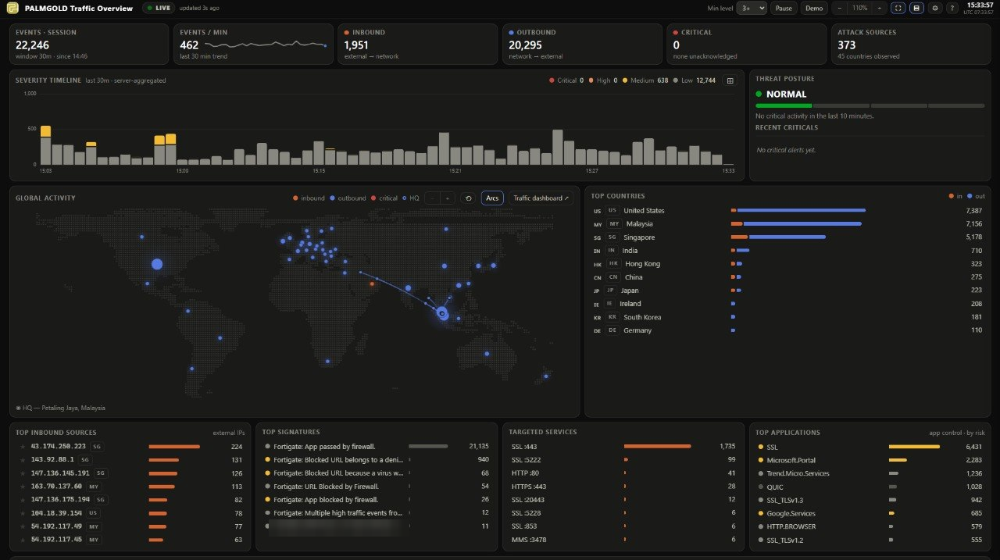

In production
Flagship
Enterprise SOC build-out
From a proof of concept on a spare desktop to the production stack that now runs the company’s monitoring. I am the only person on security, so the architecture, the detection content, the incident response and the reporting are all mine.
WazuhOpenSearchZeek
SuricataProxmoxNginx
Detection engineeringIncident response

What it involved 5
- PlatformWazuh manager with co-located OpenSearch, on a Proxmox host, tuned at the systemd level to stay stable under sustained ingest.
- CollectionSix sources normalised through custom ingest pipelines that resolve field-mapping conflicts between them.
- SensorPort mirroring from the core and access switches into a multi-node Zeek cluster through a Python decapsulation stage.
- DetectionCustom decoders and correlation rules written for the hardware actually in use, deliberately without an endpoint-agent dependency I have no authority to deploy.
- ReliabilityRetention policies after archive logging filled the disk and silently flipped every index read-only; SQLite recovery across dozens of corrupt agent databases; NIC-level fixes for link flapping and transmit-engine hangs.